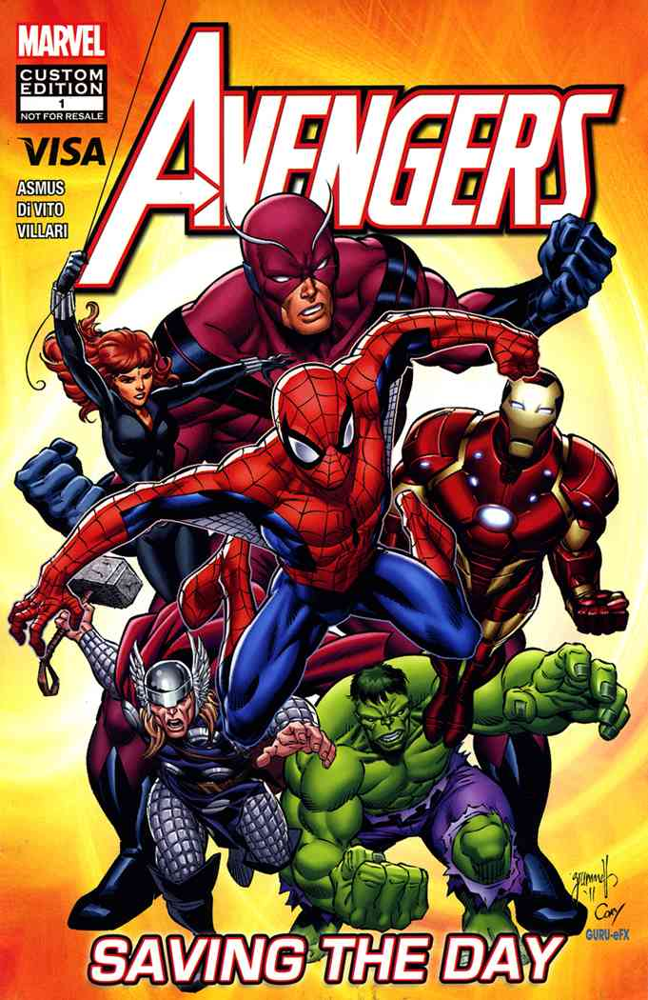
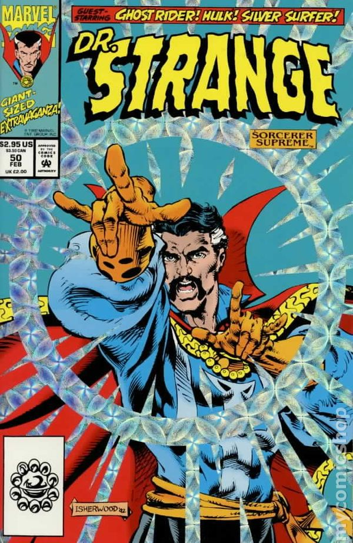
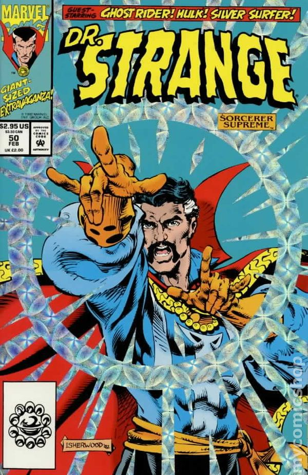

Stan Lee
(1922-2018)

Stan Lee was an American comic-book writer, editor, and publisher, who was executive vice president and publisher of Marvel Comics.
Stan was born in New York City, to Celia (Solomon) and Jack Lieber, a dress cutter. His parents were Romanian Jewish immigrants. Lee co-created Spider-Man, the Hulk, Doctor Strange, the Fantastic Four, Iron Man, Daredevil, Thor,
the X-Men, and many other fictional characters, introducing a thoroughly shared universe into superhero comic books. In addition, he challenged the comics' industry's censorship organization, the Comics Code Authority, indirectly
leading to it updating its policies. Lee subsequently led the expansion of Marvel Comics from a small division of a publishing house to a large multimedia corporation.
He had cameo appearances in many Marvel film and television projects, with many yet to come, posthumously. A few of these appearances are self-aware and sometimes reference Lee's involvement in the creation of certain characters.
On 16 July 2017, Lee was named a Disney Legend, a hall of fame program that recognizes individuals who have made an extraordinary and integral contribution to The Walt Disney Company.
Continue Reading..
Join us and get variety of benefits, including merchandise and free movie tickets from MARVEL
Stan Lee's Superhero Comic Book-Based Movies
Avengers

Doctor Strange

 

Meet the Team behind INSPIRE | Stan Lee

Mr. X
Bos
Just because someone stumbles and loses their path, doesn't mean they can't be saved
-Prof. Charles Xavier